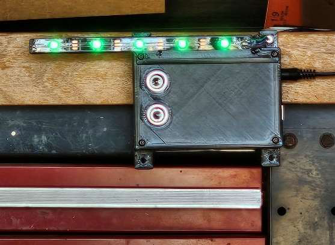
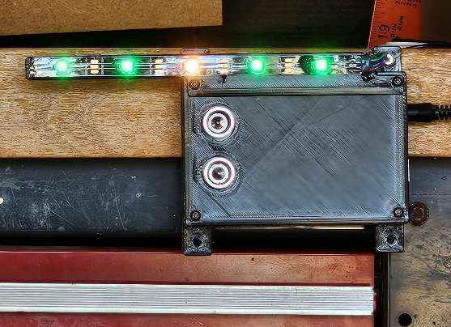
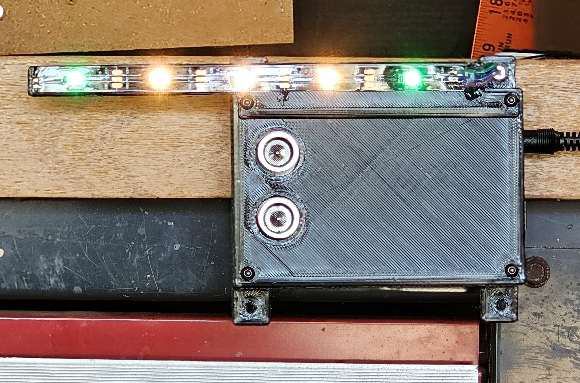
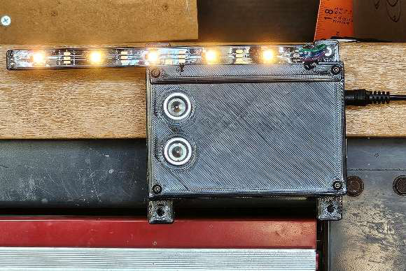
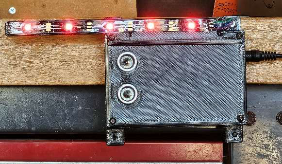
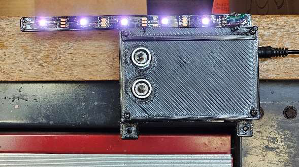

State of LEDs between 103 inches and 123

State of LEDs between 83 inches and 103

State of LEDs between 63 inches and 83

State of LEDs between 43 inches and 63

State of LEDs between 27 inches and 43

State of LEDs less than 27 inches from